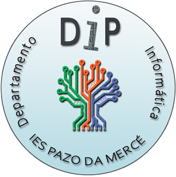

Bienvenidos
Bienvenido a la web del Departamento de Informática. Aquó podrás encontrar información sobre la oferta formativa del departamento, sus instalaciones, proyectos y programaciones de los módulos formativos impartidos.

Bienvenido a la web del Departamento de Informática. Aquó podrás encontrar información sobre la oferta formativa del departamento, sus instalaciones, proyectos y programaciones de los módulos formativos impartidos.